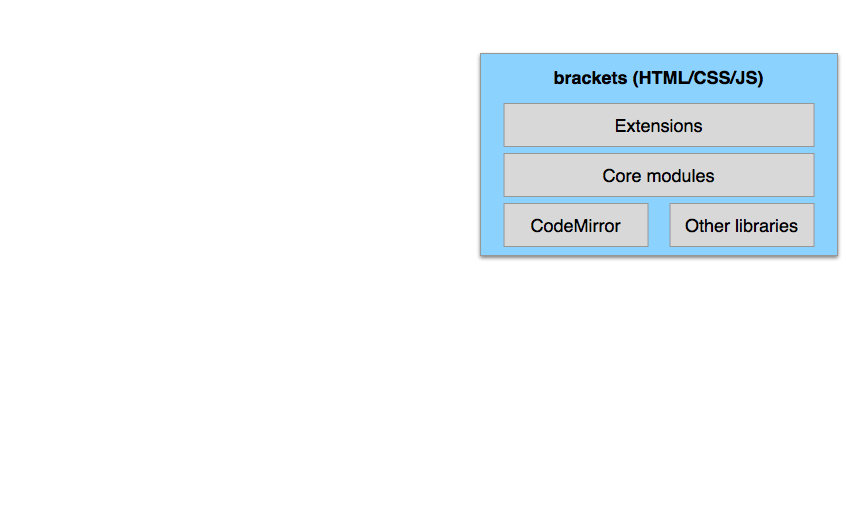

Brackets

Exploring the Future of Web Tooling
Narciso (nj) Jaramillo, Adobe / @notwebsafe / QCon SF 2013
What is Brackets?
An open-source code editor
for HTML/CSS/JavaScript
built in HTML/CSS/JavaScript
and architected for extensibility
Demo
Experiments
Theseus


Debugging async code is fun!
#amirite #yolo

Something's wrong!
Guess at the problem
Add breakpoints, logs
Reload

Fixed yet?
Demo
Instabug
Peter Flynn · github.com/peterflynn
Demo
PSD Lens
Building on the Web Stack
Why?
- Flexibility for UI prototyping
- Multi-platform, multi-device
- Users can be builders
- No compiling!
Challenges
- Lack of strong typing
- Managing large amounts of JS
- CSS for app layout
- Asynchronicity
- Performance
The shoulders of giants
| Modularity | require.js |
| Unit testing | Jasmine |
| Static analysis | JSLint |
| CSS management | LESS |
| Asynchronicity | Promises |
| Debugging | Browser dev tools (+ Theseus?) |
Other key libraries
| CodeMirror 2 | Text editor |
| jQuery | DOM manipulation, AJAX |
| Bootstrap | CSS framework |
BLOCK DIAGRAM TIME!

Caveats
- Still exposed to browser bugs
- Cross-browser will eventually be an issue
- Hard to find contributors with native experience
- Performance issues can be hard to track down
- CSS still not great for app layout - Topcoat, grids coming
Extending Brackets
- Create a folder in the
extensions/userdirectory - Create a module named
main.jsin that folder - Use
brackets.getModule()instead ofrequire() - Profit!
Example
Open Source Rocks
The Numbers
Open-sourced May 2012
50-60,000 downloads per sprint
~13,000 watchers, ~2,500 forks
~140 external contributors
5 external committers
140 extensions
Working with External Developers
- Budget time for code reviews
- Devs will scratch their own itches
- Core is hard, extensions are easier
- Keeping devs engaged takes time
- We're still learning
Conclusions


Narciso (nj) Jaramillo / @notwebsafe